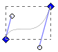
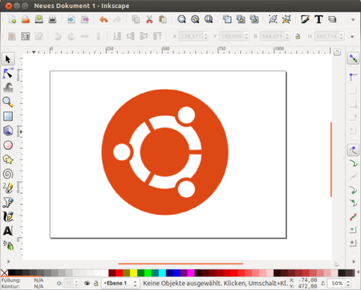
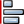
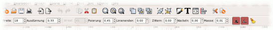

Inkscape
Dieser Artikel wurde für die folgenden Ubuntu-Versionen getestet:
Ubuntu 16.04 Xenial Xerus
Ubuntu 14.04 Trusty Tahr
Zum Verständnis dieses Artikels sind folgende Seiten hilfreich:
Inkscape  ist ein Vektorgrafik-Programm ähnlich den kommerziellen Produkten Adobe Illustrator, FreeHand, Corel Draw oder Xara Xtreme. Das Langzeitziel der Entwickler ist die vollständige Einhaltung der Standards XML, CSS sowie des eigens verwendeten Formats SVG. Neben dem Import und Export von Bitmapgrafiken beherrscht Inkscape auch den (teilweise einseitigen) Umgang mit den Formaten PDF, (E)PS, XCF, DXF, POV, ODG, AI und TEX.
ist ein Vektorgrafik-Programm ähnlich den kommerziellen Produkten Adobe Illustrator, FreeHand, Corel Draw oder Xara Xtreme. Das Langzeitziel der Entwickler ist die vollständige Einhaltung der Standards XML, CSS sowie des eigens verwendeten Formats SVG. Neben dem Import und Export von Bitmapgrafiken beherrscht Inkscape auch den (teilweise einseitigen) Umgang mit den Formaten PDF, (E)PS, XCF, DXF, POV, ODG, AI und TEX.
 Inkscape bietet eine sehr benutzerfreundliche Oberfläche, die trotz der vielen Funktionen intuitiv und übersichtlich bleibt. Als Vektorgrafik-Programm arbeitet man unter Inkscape ausschließlich mit sogenannten Bézier-Kurven, die sich aus Knoten und Anfassern zusammensetzen und Pfade bilden. Auf diesem Weg bleibt die Zeichnung zu jedem Zeitpunkt verlustfrei vollständig editier- und skalierbar. Da es sich bei SVG um ein XML-basiertes Format handelt, kann die Datei mit einem gewöhnlichen Editor geöffnet und angepasst werden. Der integrierte XML-Editor ist hierfür ein gutes Hilfsmittel.
Das Einsatzgebiet von Inkscape ist riesig. Eine Auflistung der Möglichkeiten würde den Umfang dieses Artikels sprengen. Noch nicht geeignet ist Inkscape hingegen in der Version 0.47 für den Bereich Druckvorstufe. Hier sind DTP-Applikationen wie Scribus die bessere Wahl.
Will man eine Bitmap-Graphik (.jpg, .png etc.) als Vektorgraphik (.svg) abspeichern, muss sie vorher vektorisiert werden ("pulldown-Menü -> Pfad").
Funktionsübersicht¶
Vektorgrafik¶
Für die Unterscheidung zwischen Vektorgrafik (Inkscape, Illustrator,..) und Rastergrafik (GIMP, Photoshop,..) bitte externe Quellen verwenden. Nur soviel sei gesagt: Der entscheidende Vorteil von Vektorgrafikprogrammen wie Inkscape ist die freie Skalierbarkeit der Grafik. D.h. man braucht sich keine Gedanken darüber zu machen, in welcher Größe man eine Grafik später brauchen wird, da der Export für den späteren Verwendungszweck (z.B. Druck, Homepage,..) in beliebiger Auflösung und Größe erfolgen kann. Durch die Vektortechnik ist man nicht an bestimmte Auflösungen gebunden, Objekte können jederzeit ohne Verluste in ihrer Größe angepasst werden. Ein weiterer Vorteil der Vektorgrafik ist somit auch die Editierfunktion. Unter Inkscape bestehen Grafiken aus einer logisch geordneten Ansammlung an Objekten, die beliebig auch nachträglich angepasst werden können.
Eine große Sammlung an unter freien Lizenzen stehenden Vektorgrafiken findet man auf der Projektseite  der Open Clipart Library.
der Open Clipart Library.
Nicht zu gebrauchen ist Inkscape für den Bereich Bildbearbeitung. Diese Funktion decken pixelbasierte Grafikprogramme wie GIMP ab. 
Spezielle Funktionen¶
3D-Funktion
Farbfüller
Boolesche Operationen (komplexe Pfadoperationen)
Farbverläufe (linear, radial)
Füllmuster
Bitmaptracing (Bitmap/Pixel → Vektor)
Gekachelte Klone
Maskierung und Ausschneidepfade (engl. clipping)
Transparenzeffekte (Alphakanal)
Gruppen und Ebenen
Pfadgebundene und objektumfließende Texte
direkte XML-Bearbeitung
Whiteboard (Gemeinsam genutzte Zeichenfläche über das XMPP-Protokoll)
Grafiktablettunterstützung
Formate¶
Importformate:
Vektorgrafiken (PDF, SVG, SVGZ, AI, WMF, DIA)
Bitmapgrafiken (JPEG, PNG, GIF, TIF, TGA, u.v.m.)
Andere Formate (WordPerfect-Grafik, GimpGradient,..)
Exportformate:
Vektorgrafiken (SVG, SVGZ, PS, EPS, PDF, AI, ODG, DIA, DXF, POV)
Bitmapgrafiken (PNG als einziges Bitmapausgabeformat)
Andere Formate (XCF, Gimp Palette)
Installation¶
Am einfachsten ist die Installation von Inkscape aus den offiziellen Quellen [1].
inkscape
 mit apturl
mit apturl
Paketliste zum Kopieren:
sudo apt-get install inkscape
sudo aptitude install inkscape
Optional können noch die folgenden Pakete installiert werden:
dia-gnome (optional)
libwmf-bin (universe, optional)
pstoedit (universe, optional)
sketch (universe, optional)
mit apturl
Paketliste zum Kopieren:
sudo apt-get install dia-gnome libwmf-bin pstoedit sketch
sudo aptitude install dia-gnome libwmf-bin pstoedit sketch
PPA¶
Die aktuelle stabile Version kann man über ein "Personal Package Archiv" (PPA) beziehen.
Adresszeile zum Hinzufügen des PPAs:
ppa:inkscape.dev/stable
Hinweis!
Zusätzliche Fremdquellen können das System gefährden.
Ein PPA unterstützt nicht zwangsläufig alle Ubuntu-Versionen. Weitere Informationen sind der  PPA-Beschreibung des Eigentümers/Teams inkscape.dev zu entnehmen.
PPA-Beschreibung des Eigentümers/Teams inkscape.dev zu entnehmen.
Damit Pakete aus dem PPA genutzt werden können, müssen die Paketquellen neu eingelesen werden.
Nach dem Aktualisieren der Paketquellen kann das folgendes Paket installiert werden:
inkscape-trunk (ppa)
mit apturl
Paketliste zum Kopieren:
sudo apt-get install inkscape-trunk
sudo aptitude install inkscape-trunk
Benutzung¶
Werkzeuge¶
| Werkzeug | Beschreibung | Tasten | |
| "Auswahlwerkzeug" | Verschiebt, rotiert, skaliert und schert Objekte | F1 od. S | |
| "Knotenwerkzeug" | Ermöglicht das direkte Editieren von Knoten und Pfaden | F2 od. N | |
| "Verformwerkzeug" | Ab Version 0.46: Objekte verbessern durch Verformen oder Malen; modifiziert den Pfad der überfahrenen Elemente | ⇧ + F2 | |
| "Zoom" | Zoomt innerhalb des Dokuments heran oder weg | F3 od. Z | |
| "Rechteckwerkzeug" | Zieht Rechtecke auf, zus. STRG-Taste für Verhältnisse | F4 od. R | |
| "3D-Box" | Ab Version 0.46: 3D-Boxen erzeugen; die perspektivischen Fluchtpunkte können festgelegt werden | ⇧ + F4 | |
| "Ellipsenwerkzeug" | Erstellt Ellipsen, STRG-Taste für Kreise | F5 od. E | |
| "Sternwerkzeug" | Alle Arten von Polygonen | ⇧ + | |
| "Spiralwerkzeug" | Erzeugt Spiralen | F9 od. I | |
 | "Freihandlinienwerkzeug" | Linien freihand zeichnen, SHIFT für zusammenhängende Objekte | F6 od. P |
| "Kurven- und Linienwerkzeug" | Werkzeug, um Bézier-Kurven zu erstellen. STRG-Taste für gerade Linien. | ⇧ + F6 od. B | |
| "Kalligrafiewerkzeug" | Wertvolles Werkzeug besonders im Umgang mit einem Grafiktablett | Strg + F6 od. C | |
| "Füllwerkzeug" | Ab Version 0.46: Abgegrenzte Gebiete füllen; füllt die im angeklickten Bereich angezeigte Farbe durch eine neue Farbe als eigenständiges Element aus | ⇧ + F7 | |
| "Textwerkzeug" | Textbox aufziehen und schreiben | F8 od. T | |
| "Verbindungswerkzeug" | Objekte lassen sich hiermit dynamisch verbinden, sodass die Verbindung bei Verschiebung bestehen bleibt | Strg + F2 od. O | |
| "Farbverlaufwerkzeug" | Nach der Zuweisung eines Farbverlaufs kann man diesen in seiner Ausrichtung anpassen | Strg + od. G | |
| "Pipette" | Werkzeug um Füll- oder Konturfarben zu setzen | F7 od. D |
Generell gilt im Umgang mit Inkscape und bei der Erstellung/Bearbeitung von Objekten an die Benutzung der Strg und ⇧ -Tasten zu denken, da diese einzeln und in Kombination für das Einhalten gewisser Relationen und Ausrichtungen verantwortlich sind.
Dialoge¶
| Dialog | Beschreibung | Tasten | |
| "Füllung und Kontur" | Alle Farbeinstellungen, Füllung von Objekten, Konturlinien, Farbverläufe, Füllmuster | Strg + ⇧ + F | |
| "Schrift und Text" | Textdialog für Schriftart, -größe und -ausrichtung | Strg + ⇧ + T | |
| "XML-Editor" | Die Bedienung dieses Instruments ist für den Gebrauch von Inkscape nicht nötig, für Fortgeschrittene jedoch ein praktisches Werkzeug | Strg + ⇧ + X | |
|  | "Ausrichten und Abstände" | Objekte können hier aufeinander, auf eine Auswahl oder auf die gesamte Seite bezogen ausgerichtet werden, Abstände angeglichen und Überlappungen entfernt werden | Strg + ⇧ + A |
Menüleiste¶
| Beschreibung | |
| "Datei" | Neue Dokumente, Vorlagen öffnen, Import/Export, Speichern, Drucken, Programm-, Dokumenteinstellungen, Metadaten, Eingabegeräte |
| "Bearbeiten" | Bearbeitungshistorie (Vor/Zurück), Ausschneiden/Kopieren/Einfügen, Stile vergeben/anwenden, Duplizieren/(Gekachelte) Klone, Auswahl |
| "Ansicht" | Zoom, Anzeigemodus (Umriss/Normal), Raster, Führungslinien, Programmoberflächeneinstellungen, Farbpalette, Icon-Vorschaufenster |
| "Ebene" | Erweiterte Ebenenverwaltung |
| "Objekt" | Gruppierungen, Ausschneidepfad (Cliping), Maskierung, Muster, Objektorientierung, Transformationen, Ausrichtung/Anordnung |
| "Pfad" | Erweiterte Pfadoperationen: Bool'sche Operationen (Vereinigung, Differenz, Interselektion, Exklusiv-Oder, Division, Pfad auftrennen), Kombinieren/Zerlegen, Schrumpfen/Ausweiten, Dynamischer/Verbundener Offset, Vereinfachen, Richtung umkehren |
| "Text" | Text an Pfad/Objekten ausrichten/lösen, Erweiterte Textsatzoptionen |
| "Effekte" | Große Auswahl an Skripten, die verschiedenste Operationen ermöglichen, um unnötige Handarbeit zu ersparen |
| "Whiteboard" | Mittels XMPP-Protokolls (XMPP (Jabber)) ermöglicht das Whiteboard mehreren Benutzern sich über eine aktive Netzwerkverbindung eine Zeichenfläche zu teilen. Die Teilnehmer sehen somit sowohl, was das ferne Gegenüber zeichnet als auch das selbst Gezeichnete. |
| "Hilfe" | Erläuterung der Steuerung (Maus/Tastaturkürzel), Einführungsdokumente, Link zum Handbuch |
Grafiktablett¶
Inkscape bringt eine Unterstützung für druckempfindliche Grafiktabletts mit, wie sie z.B. von der Firma Wacom hergestellt werden. Besonders das "Kalligrafiewerkzeug" entfaltet sein wahres Potenzial erst mit der Verwendung eines Grafiktabletts.
Meistens werden die Geräte automatisch erkannt und können entweder sofort oder nach einem Neustart des X-Servers (ab- und wieder anmelden) verwendet werden. Für den Fall, dass das Tablett teilweise oder nicht perfekt funktioniert, gibt es bereits sehr gute Anleitungen, die am Ende des Artikels im Abschnitt "Links" zu finden sind.
Auch Inkscape benötigt meist keine Konfiguration mehr. Auf ein paar Dinge sollte man dennoch achten. Unter "Datei -> Eingabegeräte" sollte als "Modus" für alle Geräte "Bildschirm" gewählt werden. Zwei Knöpfe in den Einstellungen des Kalligrafiewerkzeugs sollte man für den vollen Funktionsumfang auch noch aktivieren.
Verwandte Projekte¶
Parallel zu Inkscape wurde - in Zusammenarbeit mit den Inkscape-Entwicklern - an einer kommerziellen Open Source-Alternative namens Xara Xtreme gearbeitet. Nach der Übernahme durch Magix ist die weitere Zukunft unklar. Ebenfalls in einem sehr fortgeschrittenen Entwicklungsstadium befindet sich das KDE-Projekt Karbon als Teil von Calligra. Als leichtgewichtige Alternative gibt es noch xfig, das geeignet ist, um schnell Kurven und Grafiken für wissenschaftliche Arbeiten zu zeichnen.
Problembehebung¶
LaTeX wird nicht gerendert¶
Die Funktion "Effekte → Rendern → LaTeX-Formeln" ist schon seit längerem Defekt (168977). Eine Alternative bietet die Erweiterung TexText , die zudem die LaTeX-Formeln im SVG speichert, so dass sie editierbar bleiben.
Copy & Paste erzeugt Fehler¶
Wenn man Strg + V drückt, um etwas einzufügen, kann es passieren, dass das Plugin "Uniconvertor" einen Fehler meldet (418242). Zur Lösung sollte man
Das Paket python-uniconvertor installieren und
Programme, welche die Zwischenablage überwachen, beenden oder diese Funktion deaktivieren (JDownloader ist so ein Beispiel!)
Eine andere Möglichkeit ist das folgenden Skript:
#Patch for Inkscape on XFCE Systems or non other working systems #Author: Randy Yang #Date: 09/16/2011 #Say hi to me @: www.randyyaj.blogspot.com #How to use: In terminal navigate to the folder where this script exist #and type : chmod +x InkscapePatch.sh #to run type: ./InkscapePatch.sh cd sudo chmod 755 ../../usr/share/inkscape/extensions/gimp_xcf.py sudo chmod 755 ../../usr/share/inkscape/extensions/jessyInk_export.py sudo chmod 755 ../../usr/share/inkscape/extensions/uniconv_output.py sudo sed -i '110,217 s/^/#/' ../../usr/share/inkscape/extensions/gimp_xcf.py sudo sed -i '103,115 s/^/#/' ../../usr/share/inkscape/extensions/jessyInk_export.py sudo sed -i '88,92 s/^/#/' ../../usr/share/inkscape/extensions/uniconv_output.py
Deutsche Oberfläche unter KDE¶
Lässt sich die Nutzeroberfläche nicht auf deutsch umstellen, hilft das Nachinstallieren des deutschen Sprachpakets für GNOME:
language-pack-gnome-de
mit apturl
Paketliste zum Kopieren:
sudo apt-get install language-pack-gnome-de
sudo aptitude install language-pack-gnome-de
Tutorials¶
Allgemein¶
Dokumentation für Benutzer - Linksammlung zu Dokumentation in verschiedenen Sprachen auf der Homepage des Programms
Eine gute Einführung in Inkscape bieten die mitgelieferten SVG-Dateien, die sich über "Hilfe -> Einführungen .." aufrufen lassen.
Einen reichhaltigen Fundus an Tutorials bietet das deutschsprachige Inkscape-Forum in seiner Tutorialkategorie
YouTube
stellt viele Videotutorials für Inkscape zur Verfügung. Mehr als 80 Video-Tutorials gibt es bei http://screencasters.heathenx.org
.Noch mehr Tutorials http://inkscapetutorials.wordpress.com/
Beispieltutorials¶
Armbanduhrdesign mit Inkscape
- Am Beispiel einer Armbanduhr wird gezeigt, dass Design mit Vektorgrafik und Inkscape möglich ist. Vektorisieren mit Inkscape
- Zeigt, wie man aus einer Rastergrafik eine Vektorgrafik zaubert, um diese zum Beispiel als T-Shirt-Motiv zu verwenden. 3D-Effekt
- Der gezielte Einsatz von Farbverläufen, Licht und Schatten um 3D-Effekte zu erzielen. Farbverläufe
- Ein ausführliches Tutorial zu einem der wichtigsten Werkzeuge der Vektorgrafik. Comics mit Inkscape
Sprechblasen und Lautblasen aus einfachen FormenPräsentation mit JessyInk von Sirko Kemter
- Ubucon, 10/2012 Grundlagen und Technik (Inkscape-unabhängig)
- Niklas Jansson hat auf seiner Seite ein hervorragendes Inkscape-unabhängiges Tutorial herausgebracht, das allgemeine Techniken von Farb- und Lichtgebung im Grafikdesign anschaulich bespricht.
- Erstellt mit Inyoka
-
 2004 – 2017 ubuntuusers.de • Einige Rechte vorbehalten
2004 – 2017 ubuntuusers.de • Einige Rechte vorbehalten
Lizenz • Kontakt • Datenschutz • Impressum • Serverstatus -
Serverhousing gespendet von